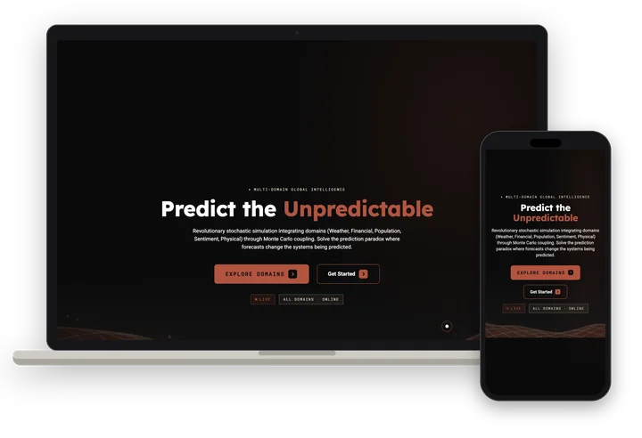

Landslide
Product · Landing site · Product interface
Stochastic simulation that couples weather, financial, population, sentiment and physical domains to model how shocks cascade.
Visit ↗


About
Landslide is a stochastic simulation platform that links five domains (weather, financial, population, sentiment and physical) through Monte Carlo coupling, so a disruption in one can be traced into the others.
It was built around what the site calls the prediction paradox, where forecasts change behavior and so change the outcomes being forecast. Extreme value theory is used to model rare, high-impact tail events.
Automated findings stream alongside each run and mark prediction stalls and distribution hotspots on the map. The live demo uses an approximate AI surrogate on sample scenarios, which the page labels as an estimate rather than a full simulation.
Landslide publishes trained surrogate models with model cards, an open benchmark with a public leaderboard, and a desktop app for macOS and Linux.
Butts Studios designed the landing site and the product interface.
Details
- What we made
- Landing site · Product interface
- Captured
- October 2026
Gallery
7 images. Tap any one to see it full size.


Articles & notes
Published pages from Landslide: write-ups, docs and data. Each opens on its own site.
- landslide.global ↗Cross-Domain Monte Carlo & Tail RiskTechnical overview of domain coupling, extreme value theory and cascade models
- landslide.global ↗The Domain-Coupling Forecast BenchmarkOpen benchmark task, scoring rules and reference leaderboard for surrogates
- landslide.global ↗ModelsSurrogate weights, model cards and accuracy charts for Landslide models
- landslide.global ↗AI Sentiment: What Landslide's Model Predicts vs. What's Actually HappeningPublic scorecard comparing model forecasts with AI opinion polling
- landslide.global ↗Benchmarking a Surrogate for Monte Carlo Risk Is About the TailsWhy average accuracy misleads when scoring risk surrogates
- landslide.global ↗Extreme Value Theory and the Mathematics of Rare EventsExplainer on modeling the tail of a distribution directly